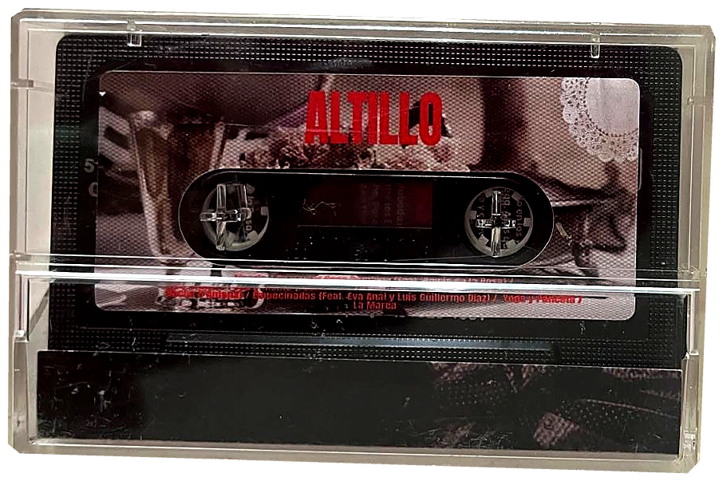

Lo que vamos a ver, miércoles a miércoles.

Lo estamos terminando. Los tres conceptos y el calendario son firmes; el detalle de cada sesión lo vamos rellenando aquí mismo. Donde veas pendiente es que todavía lo estamos cocinando.
No venimos a sentar cátedra.